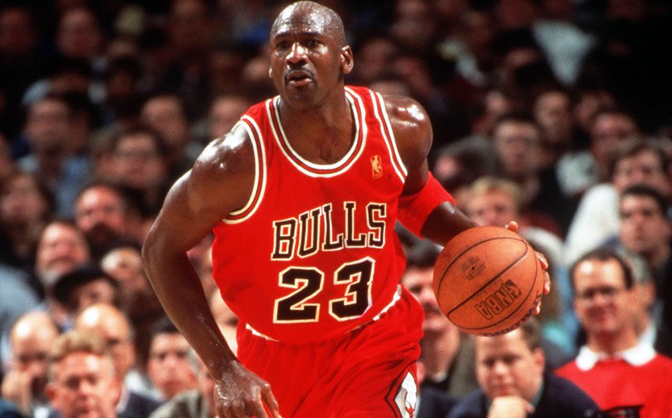
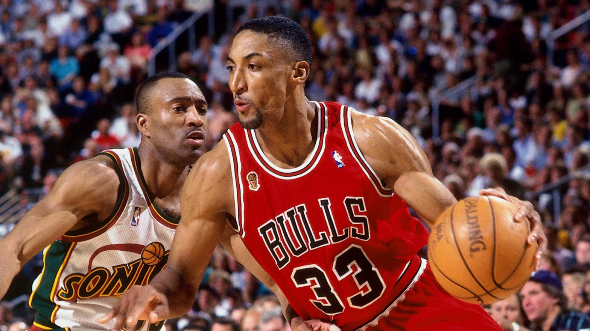
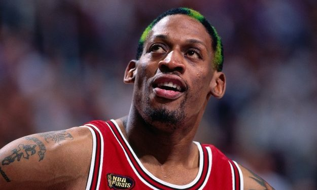
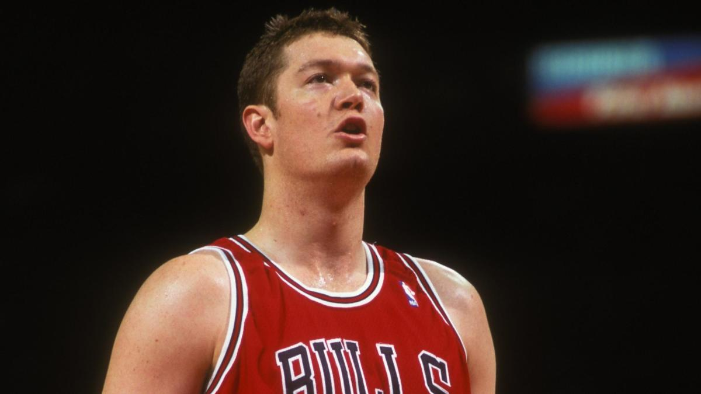

Ronald Harper nacido el 20 de enero de 1964 es un ex jugador de baloncesto profesional estadounidense. Jugó para cuatro equipos en la Asociación Nacional de Baloncesto NBA entre 1986 y 2001 y es cinco veces campeón de la NBA

Michael Jeffrey Jordan nacido el 17 de febrero de 1963, es un exjugador de baloncesto profesional. Jugó quince temporadas en la Asociación Nacional de Baloncesto, ganando seis campeonatos de la NBA con los Chicago Bulls.

Scotty Maurice Pippen Sr nacido el 25 de septiembre de 1965, es un ex jugador de baloncesto profesional estadounidense. Jugó 17 temporadas en la Asociación Nacional de Baloncesto, ganando seis campeonatos de la NBA con los Chicago Bulls.

Dennis Keith Rodman nació en Trenton, Nueva Jersey, un 13 de mayo de 1961 es un exbaloncestista estadounidense que disputó 14 temporadas en la NBA.

Lucas James Longley nacido el 19 de enero de 1969 es un exjugador y entrenador de baloncesto profesional australiano. Fue el primer australiano en jugar en la Asociación Nacional de Baloncesto , donde jugó para cuatro equipos durante 10 temporadas. Longley jugó más ciertamente para los Chicago Bulls